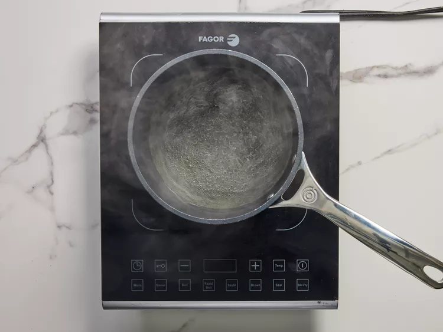

Gather all ingredients.
Combine rice vinegar, sugar, and water in a saucepan. Bring to a boil over medium heat, stirring until sugar has dissolved, about 1 minute. Allow the mixture to cool.
Place carrot, radish, and onion in a bowl. Pour in cooled vinegar mixture and let marinate at least 30 minutes. While vegetables marinate, set an oven rack about 6 inches from the heat source and preheat the broiler. Lightly oil a slotted broiler pan.
Sprinkle chicken breast with garlic salt and pepper.
Place chicken on the prepared pan and broil, turning once, until browned and no longer pink in the center, about 6 minutes per side.
Place chicken on a cutting board. Cut into bite-sized pieces.
When noodles have soaked for 1 hour, heat up the reserved broth by bringing it to a simmer.
Lightly toast baguette under the broiler, 2 to 3 minutes.
Drain off excess vinegar mixture after vegetables have marinated.
To assemble the sandwich, spread each half of toasted baguette with mayonnaise. Layer chicken on the bottom half of the bread. Top with cucumber, drained pickled vegetables, cilantro, and jalapeño. Squeeze lime wedge over fillings and cover with top half of baguette.
Cut into two 6-inch sandwiches to serve.